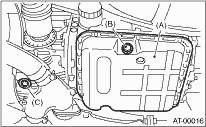

1. Lift the vehicle.
2. Remove the differential gear oil drain plug using TORX ® BIT T70, and drain the differential gear oil completely.
CAUTION:
• Immediately after the vehicle has been running, the differential gear oil is very hot. Be careful not to burn yourself.
• Be careful not to spill differential gear oil on the exhaust pipe to prevent it from emitting smoke or causing a fire. If differential gear oil is spilled on the exhaust pipe, wipe it off completely.
3. Replace the gasket with a new part and tighten the differential oil drain plug using the TORX® BIT T70.
Tightening torque:
Copper gasket
70 N·m (7.1 kgf-m, 51.6 ft-lb)
Aluminum gasket
44 N·m (4.5 kgf-m, 33 ft-lb)

|
(A) |
Oil pan |
|
(B) |
Drain plug (ATF) |
|
(C) |
Differential gear oil drain plug |
4. Lower the vehicle.
5. Pour differential gear oil from the gauge hole into the differential.
Recommended gear oil:

Gear oil capacity:
1.1 — 1.3 L (1.2 — 1.4 US qt, 1.0 — 1.1 Imp qt)
6. Check the level of differential gear oil.